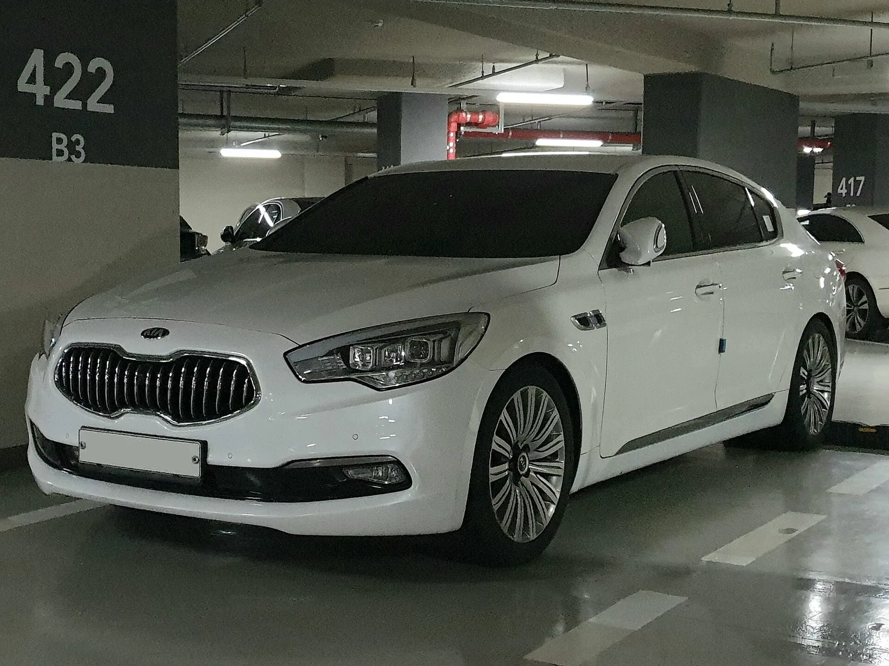
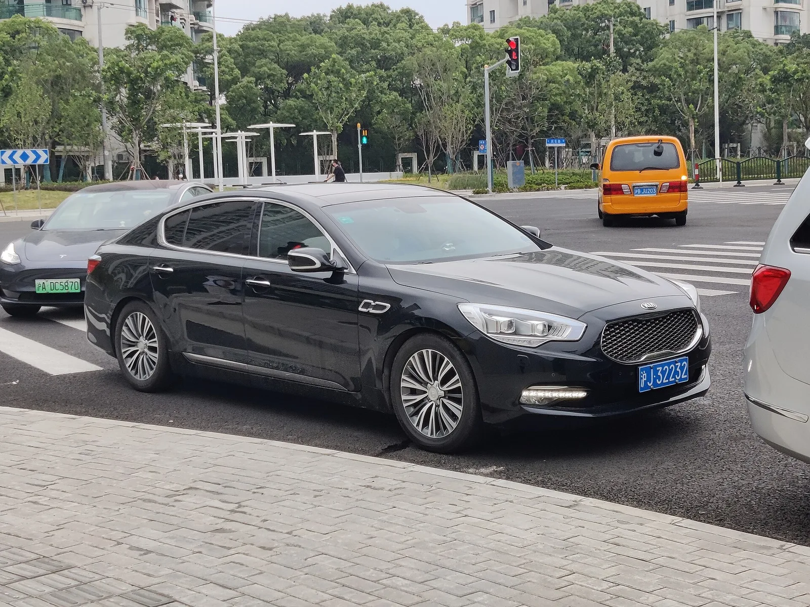
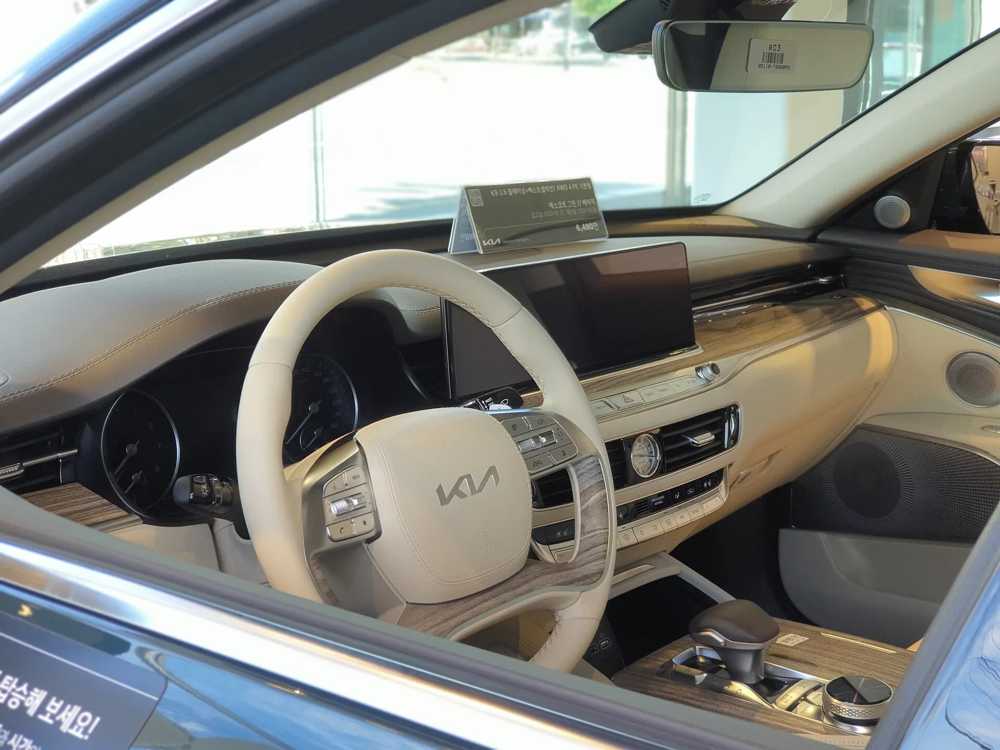

▲ K9. 2012년 오피러스 후속으로 나온 지 14년이 됐다 ⓒ Wikimedia Commons
K9의 판매량이 4년 만에 4분의 1 토막이 났습니다.
2022년 6,585대 → 2025년 1,581대 → 2026년 상반기 734대.
2026년 말 오토랜드 광명에서 생산이 멈추는 것으로 알려졌습니다. 2012년 출시 이후 14년 만입니다.
1. 숫자가 말하는 것
| 연도 | 판매 | 전년 대비 |
|---|---|---|
| 2022년 | 6,585대 | — |
| 2025년 | 1,581대 | 3년 만에 -76% |
| 2026년 상반기 | 734대 | 연 환산 약 1,500대 |
월 평균 122대입니다. 전국에서 하루에 네 대가 팔리는 셈입니다.
이 정도 물량으로는 생산 라인을 유지하기 어렵습니다. 대형 세단은 부품 공용화 여지가 적고, 전용 부품이 많습니다. 판매가 줄면 대당 고정비가 급격히 올라갑니다.
2. 왜 안 팔렸나
| 요인 | 내용 |
|---|---|
| 제네시스 G80·G90 | 같은 그룹 안에 전용 럭셔리 브랜드가 생겼다 |
| SUV 이동 | 대형 세단 수요가 대형 SUV로 옮겨갔다 |
| 파워트레인 | 3.8·5.0 가솔린 — 하이브리드가 없다 |
| 브랜드 | 기아 엠블럼으로 9,000만 원대를 설득하기 어렵다 |
첫 번째 항목이 구조적입니다. 제네시스가 2015년 독립 브랜드로 출범하면서, 현대차그룹 안에서 대형 럭셔리 세단의 자리는 G80과 G90이 가져갔습니다.
세 번째 항목도 결정적입니다. 최근 몇 년간 국내 대형차 시장에서 하이브리드 수요가 급격히 늘었습니다. K9에는 선택지가 없었습니다. 오토트리뷴 보도가 "'이것' 없어 결국 단종 수순"이라고 지목한 것이 바로 이 부분입니다.

▲ K9은 3.8·5.0 가솔린만 운영했고 하이브리드 선택지가 없었다
3. 무엇이 남고 무엇이 사라지나
| 엔진 | 가격대 |
|---|---|
| 3.3 터보 | — |
| 3.8 GDI | 6,800만 원대부터 |
| 5.0 V8 | 9,000만 원대 (풀옵션 9,400만 원대) |
5.0 V8은 국산차에서 사실상 마지막 남은 대배기량 자연흡기입니다. 제네시스 G90도 이미 3.5 터보 중심으로 정리됐습니다.
K9이 접히면 국산 승용차에서 V8을 살 수 있는 선택지가 사라집니다.
4. 기아는 부인했다
7월 6일 단종 보도가 나온 뒤 기아는 공식 부인했습니다.
| 시점 | 내용 |
|---|---|
| 2026년 7월 6일 | 2026년 12월 후속 없이 단산된다는 보도 |
| 직후 | 기아 관계자 부인 |
| 2026년 말 | 오토랜드 광명 생산 중단 전망 |
제조사가 단종설을 즉시 인정하는 경우는 드뭅니다. 인정하는 순간 잔여 재고 판매가 어려워지고, 기존 차주의 잔가 인식에도 영향이 갑니다.
다만 부인이 곧 계획 부재를 뜻하지는 않습니다. 국내 완성차 업계에서 부인 후 몇 달 뒤 단종이 확정된 사례는 여러 차례 있었습니다.
5. 같은 흐름의 다른 세단들
| 모델 | 상황 |
|---|---|
| 기아 K9 | 2026년 말 생산 중단 전망 — 후속 계획 없음 |
| 제네시스 G70 | 3.3 트윈터보 V6 단종 전망, 2027년이 마지막일 수 있다 |
| 렉서스 LS500 | 3.5 V6 트윈터보 단종 예정 — LS500h만 남는다 |
세 모델의 공통점은 고배기량 내연기관 세단이라는 것입니다. 배출가스 규제, SUV 이동, 전동화 투자 부담이 겹치며 같은 방향으로 정리되고 있습니다.
기아는 대형 세단 라인업을 접고 전기차와 SDV(소프트웨어 중심 자동차)에 역량을 집중할 계획입니다.

▲ K9이 접히면 국산 승용차에서 V8을 살 수 있는 선택지가 사라진다

▲ K9 3.8 실내. 베이지 가죽과 우드 트림, 아날로그 시계까지 국산 플래그십의 문법이 그대로 남아 있다 ⓒ Wikimedia Commons
6. 지금 K9을 보고 있다면
| 구분 | 내용 |
|---|---|
| 신차 구매 검토 | 단종 임박 시 재고 할인 폭이 커지는 경향이 있다 |
| 잔가 | 단종 모델은 통상 중고 시세가 약해진다 — 다만 V8은 희소성 요인이 있다 |
| 부품 | 단종되더라도 부품 공급 의무 기간이 적용된다 |
| 정비 | 기아 서비스망에서 계속 대응 |
단종 자체가 보유자에게 즉각적인 문제를 만들지는 않습니다. 국내법상 제조사는 단종 후에도 일정 기간 부품을 공급해야 합니다.

▲ K9이 빠지면 기아 세단 라인업의 최상단은 K8이 맡게 된다
7. 정리
K9의 국내 판매가 2022년 6,585대에서 2025년 1,581대, 2026년 상반기 734대로 줄었습니다. 월 평균 122대 수준입니다.
2026년 말 오토랜드 광명에서 생산이 중단돼 2세대를 끝으로 14년 만에 단종될 전망입니다. 기아는 7월 보도 당시 공식 부인했습니다.
가격은 3.8 가솔린 6,800만 원대부터 5.0 V8 9,000만 원대이며, 후속 대형 세단 개발 계획은 공개된 바 없습니다. 기아는 전기차와 SDV로 역량을 옮길 계획입니다.